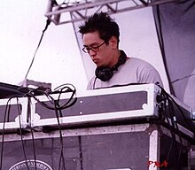
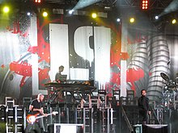

Linkin Park is an American rock band formed in Agoura Hills, California, in 1996. The band's current lineup consists of vocalist/rhythm guitarist/keyboardist Mike Shinoda, lead guitarist Brad Delson, DJ/turntablist Joe Hahn, bassist Dave Farrell, co-lead vocalist Emily Armstrong, and drummer Colin Brittain. The lineup for the band's first seven studio albums included lead vocalist Chester Bennington and drummer Rob Bourdon until Bennington's death by suicide in July 2017, which caused the band to enter an indefinite hiatus. In September 2024, Linkin Park's reformation was announced along with the addition of Armstrong and Brittain.

Linkin Park was founded by three high school friends: Mike Shinoda, Rob Bourdon, and Brad Delson.[7] The three attended Agoura High School in Agoura Hills, California, a suburb of Los Angeles.[7] After graduating from high school, the three began to take their musical interests more seriously, recruiting Joe Hahn, Dave "Phoenix" Farrell, and Mark Wakefield to perform in their band, then called Xero. Though limited in resources, the band began recording and producing songs within Shinoda's makeshift bedroom studio in 1996, resulting in a four-track demo album, entitled Xero, released in November 1997.[7] That same month, the band performed their first show, opening for SX-10 and System of a Down at the Whisky a Go Go, a nightclub in West Hollywood.[8] Delson introduced the band to Jeff Blue, the vice president of A&R for Zomba Music, whom he had interned for in college.[9][10] Blue offered the band constructive criticism to catch the attention of record labels. Blue himself was impressed with Xero after watching them play a live show in 1998 but believed the band needed a different vocalist.[9][10] Tensions and frustration within the band grew after they failed to land a record deal.[7] The lack of success and stalemate in progress prompted Wakefield, at that time the band's vocalist, to leave the band in search of other projects.[7] Farrell also left to tour with Tasty Snax, a Christian punk and ska band.[11][12] After spending a considerable time searching for Wakefield's replacement, Xero recruited Arizona vocalist Chester Bennington, who was recommended by Jeff Blue in March 1999.[13][14] Bennington, formerly of alternative rock band Grey Daze, became a standout among applicants because of the dynamic in his singing style.[7] The band then agreed on changing their name from Xero to Hybrid Theory; the newborn vocal chemistry between Shinoda and Bennington helped revive the band, inciting them to work on new material.[7][15] Additionally, the band recruited bassist Kyle Christner on a temporary basis.[16] In May 1999, the band released a self-titled extended play, which they circulated across internet chat-rooms and forums with the help of an online "street team".[17] In October 1999, Christner was replaced by Scott Koziol and Ian Hornbeck, whom along with Delson, provided bass tracks for the band's recordings.[16][18]
Linkin Park released Hybrid Theory on October 24, 2000.[28] The album, which represented half a decade's worth of the band's work, was edited by Don Gilmore.[7] Hybrid Theory was a massive commercial success; it sold more than 4.8 million copies during its debut year, earning it the status of best-selling album of 2001. Singles such as "Crawling" and "One Step Closer" established themselves as staples among alternative rock radio play lists during the year,[11] and "In the End" peaked at #2 on the US Billboard Hot 100, the band's highest to date.[29][30] Additionally, other singles from the album were featured in films such as Dracula 2000, Little Nicky, and Valentine.[11] Hybrid Theory won a Grammy Award for Best Hard Rock Performance for the song "Crawling" and was nominated for two other Grammy Awards: Best New Artist and Best Rock Album.[31] MTV awarded the band their Best Rock Video award for "In the End".[7][32]
Linkin Park returned to the recording studios in 2006 to work on new material. To produce the album, the band chose producer Rick Rubin. Despite initially stating the album would debut sometime in 2006, it was delayed until 2007.[66] The band had recorded thirty to fifty songs in August 2006, when Shinoda stated the album was halfway completed.[66][67] Bennington later added that the new album would stray away from their previous nu metal sound.[68] Warner Bros. Records officially announced that the band's third studio album, titled Minutes to Midnight, would be released on May 15, 2007, in the United States.[69][70] After spending fourteen months working on the album, the band members opted to further refine their album by removing five of the original seventeen tracks. The album's title, a reference to the Doomsday Clock, foreshadowed the band's new lyrical themes.[71] Minutes to Midnight sold over 623,000 copies in its first week, making it one of the most successful debut week albums in recent years.[72] The album also took the top spot on the Billboard Charts.[72]
Following the success of Hybrid Theory and Reanimation, Linkin Park spent a significant amount of time touring around the United States. The band members began to work on new material amidst their saturated schedule, spending a sliver of their free time in their tour bus's studio.[39] The band officially announced the production of a new studio album in December 2002, revealing their new work was inspired by the rocky region of Meteora in Greece, where numerous monasteries have been built on top of the rocks.[40] Meteora features a mixture of the band's nu metal and rap metal style with newer innovative effects, including the induction of a shakuhachi (a Japanese flute made of bamboo) and other instruments.[7] Linkin Park's second album debuted on March 25, 2003, and instantly earned worldwide recognition,[7] peaking at No. 1 on the Rock & Metal Albums Chart.[41] Meteora sold more than 800,000 copies during its first week, and it ranked as the best-selling album on the Billboard charts at the time.[42] The album's singles, including "Somewhere I Belong", "Breaking the Habit", "Faint", and "Numb", received significant radio attention.[43] By October 2003, Meteora sold nearly three million copies.[44] The album's success allowed Linkin Park to form another Projekt Revolution, which featured other bands and artists including Mudvayne, Blindside, and Xzibit.[7] Additionally, Metallica invited Linkin Park to play at the Summer Sanitarium Tour 2003, which included well-known acts such as Limp Bizkit, Mudvayne and Deftones.[45] The band released an album and DVD, titled Live in Texas, which featured some audio and video tracks from the band's performances in Texas during the tour.[7][46] In early 2004, Linkin Park started a world tour titled the Meteora World Tour. Supporting bands on the tour included Hoobastank, P.O.D., and Story of the Year.[47][48] Meteora earned the band multiple awards and honors. The band won the MTV awards for Best Rock Video for "Somewhere I Belong"[49][50] and the Viewer's Choice Award for "Breaking the Habit".[51] Linkin Park also received significant recognition during the 2004 Radio Music Awards, winning the Artist of the Year and Song of the Year ("Numb") awards.[52] Although Meteora was not nearly as successful as Hybrid Theory, it was the third best selling album in the United States during 2003.[11] The band spent the first few months of 2004 touring around the world, first with the third Projekt Revolution tour, and later several European concerts.[11] At the same time, the band's relationship with Warner Bros. Records was deteriorating rapidly on account of several trust and financial issues.[53] After months of feuding, the band finally negotiated a deal in December 2005.[54]
